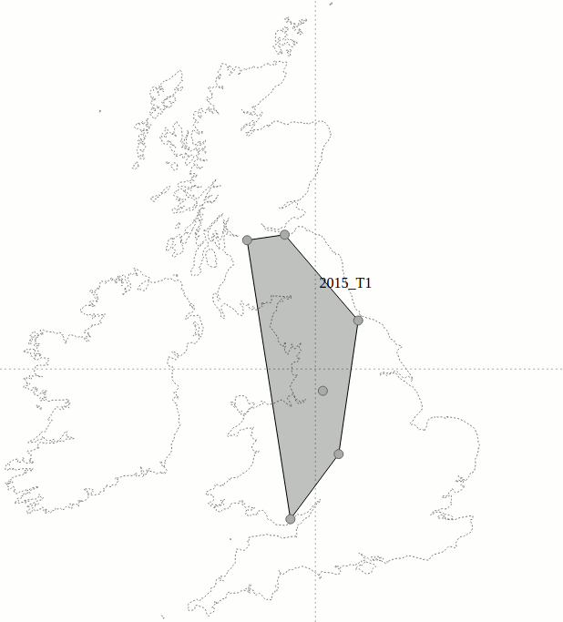
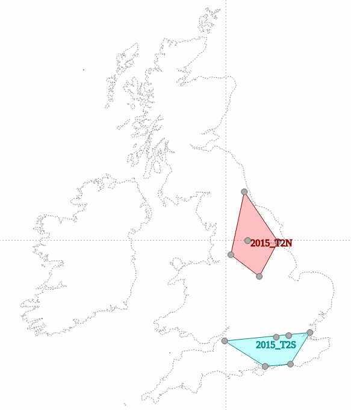
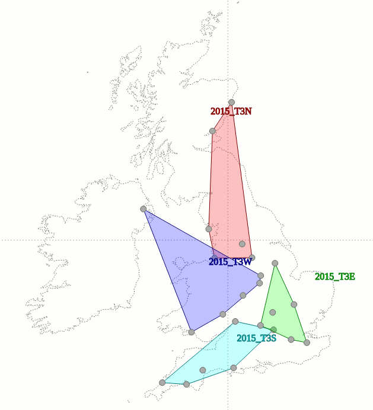
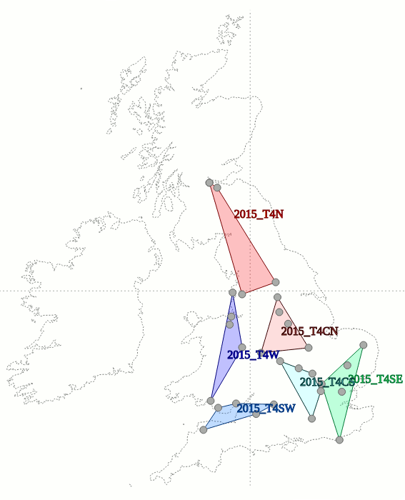
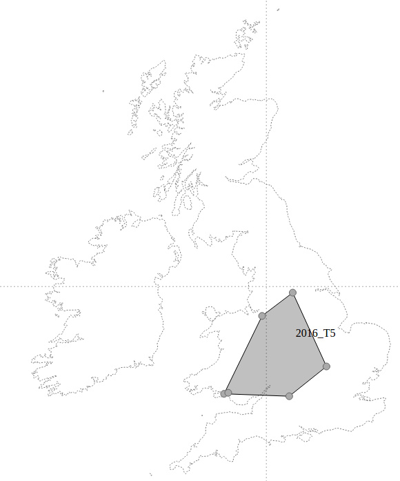

Geography of British Champs - 2015 to 2017
Since its inaugural run in 2015, the UK's "National Tournament", British Champs, has run on a complex hierarchical tiers and divisions system - with 4 (or 5 in 2016) ability-binned tiers, each subdivided into a variable number of geographically-binned subdivisions (depending on the number of teams in the tier, the number of geographical "divisions" is selected to give 5 to 6 teams per division).
If a team ends the year at the top (or bottom) of its tier, it is promoted (or relegated) to an adjacent tier - but the destination division must also be selected, which causes complications.
Running a geographically split tournament division structure is, arguably, making a rod for one's own back. Quite apart from the geopolitics of "north" and "south" in the British psyche, the additional splitting constraint makes it almost impossible to balance relegation and promotion whilst keeping the bounds of the regions sensible.
This is increasingly hard for the UK's British Championships, as the tournament is, in fact, shrinking year-on-year. In 2015, there were 72 competing women's teams; in 2016, 66, and this year there are just 61. British Champs themselves claim to be growing, but this is purely because they had no men's tier in 2015 - adding the 20 men's teams in 2016 makes the tournament "bigger", but only in a technical sense, as there's no cross-over between the men's and women's British Champs tiers. (The Men's British Champs has not changed in size between 2016 and 2017, so overall, Champs has still declined overall in the last year.)
We've plotted the shapes of the various British Champs Tiers + Divisions over the years to illustrate how they've changed shape - both from teams leaving and (less so) joining the tournament; and from promotion and relegation. (The Tier 5 is not animated, as it only existed for 2016.) On these plots, the dotted straight lines mark the North-South and East-West centrelines of the UK, so you can judge how well Champs manages to represent the geography of the UK in its divisions each year.

As can be seen, there are some very odd phenomena caused by the strict tier-and-geographical-division format. We can also see where excessive travel - remember, at least one pair of teams in a given fixture is hosted at another venue in their tier+division - can be a wear on opponents. One interesting phenomenon is the general migration of several of the South divisions towards the south-west, as promotion and relegation (which is uneven in Champs) requires more central teams to be added to the East divisions.
Solutions
One should, of course, prefer to critique than criticise. In this spirit, we have some suggestions (drawn from work ongoing for the Roller Derby World Cup 2018) as to how British Champs could improve its efficiency, whilst still providing the core benefit of giving a guaranteed, structured, 4 or 5 games to each participating team. Our suggestions also allow matching teams to close-by opponents, of similar strength; and provided a UK-wide "ranking" and "rating" of the participants.Firstly: throw away the strict categories - not just the divisions, but also the tiers. Strict boundaries are the enemy of efficient matching - the teams at the bottom of Tier X should be able to play the top of Tier X+1, and the eastmost teams in West division should be able to play the westmost teams in East division. Teams in any tier should be able to host games for any other tier. [The German Bundesliga allows this already, for example.]
Secondly: match each team to 5 opponents, on the basis of their proximity and strength relative to the team in question. There are well-understood algorithms for doing this: the minimum-weight, maximum-width matching algorithm has been used for much larger problems than this for decades (and is used by RDWC2018 for scheduling). [We actually have one additional constraint here: we want the network of teams connected by bouts to span the entire set of competitors. This is easily ensured by using an alternate matching approach for one or two of the picks for each team.]
Thirdly: scheduling of bouts should be arranged so that every team hosts 1 double or triple header. Importantly, none of the games they host should involve them competing - this avoids home team advantage - but instead should be drawn from matches where both teams are closeby. [Because we have no Tiers, there's an ample supply of such matches here.] We assign bouts to hosts by total travel distance, using maximum-weight matching again.
Fourthly: thanks to the constraints in matching above, we can produce a ranking for the teams via any reasonable rating algorithm - Flat Track Stats' Elo-derived rating, either of the SRDRank mechanisms, or others - on the basis of all of the games played over the season. The published yearly rating can be used to establish "Champions", and also to inform the matches for next year.
Example - 2017
As an example, we present how the 2017 British Champs would have looked, if run as we propose. In this case, matches have been made using SRDRank ratings from February 2017, if they existed - there are 3 teams which are problematic here (Durham City Rolling Angels, Riverside Rebels Roller Derby, Arcadia Roller Derby) for which we assigned an "average" ranking as a placeholder. We stand by the bouts themselves as the best matches possible.The resulting assignments of bouts to hosts would be the following fixtures (these don't take into account the size of the hosting venue, which obviously may be significant for some fixtures - a more polished version that was written in less than a day would include other considerations, but the bouts themselves would be the same):
-
Riot City Ravens hosts:
- Swansea City Roller Derby vs Bristol Roller Derby (Women's)
- Birmingham Blitz Dames vs Tiger Bay Brawlers
- Reaper Roller Derby vs Oxford Wheels of Gory Roller Derby
-
Leeds Roller Derby hosts:
- Wakey Wheeled Cats vs Spa Town Roller Derby
- York Minxters Roller Derby vs North Cheshire Victory Rollers
- Preston Roller Girls vs Hereford Roller Girls
-
Royal Windsor Roller Girls hosts:
- London Rockin' Rollers vs Big Bucks High Rollers
- Hertfordshire Roller Derby vs Wiltshire Roller Derby (Womens)
-
York Minxters Roller Derby hosts:
- Spa Town Roller Derby vs Lincolnshire Bombers
- Grim Reavers vs North Cheshire Victory Rollers
- Cambridge Rollerbillies vs Whippin' Hinnies
-
London Brawl Saints hosts:
- London Rockin' Rollers vs Cambridge Rollerbillies
- Vendetta Vixens vs Killa Hurtz Roller Girls
-
Wolverhampton Honour Rollers hosts:
- Birmingham Blitz Dames vs Tender Hooligans
- Bristol Roller Derby (Women's) vs Tender Hooligans
- Leeds Roller Derby vs Tiger Bay Brawlers
-
Middlesbrough Roller Derby hosts:
- Hallam Hellcats Roller Derby vs Durham City Rolling Angels
- Grim Reavers vs Durham Roller Derby
-
Cheshire Hellcats Roller Derbyhosts:
- Wolverhampton Honour Rollers vs Riverside Rebels Roller Derby
- Bath Roller Derby Girls vs Preston Roller Girls
- Middlesbrough Roller Derby vs Swansea City Roller Derby
-
Mansfield Roller Derby hosts:
- Nottingham Roller Derby (Women's) vs Hallam Hellcats Roller Derby
- Roller Derby Leicester vs Wakey Wheeled Cats
- London Brawl Saints vs Middlesbrough Roller Derby
-
Nottingham Roller Derby (Women's) hosts:
- Dolly Rockit Rollers vs Sheffield Steel Rollergirls
- Lincolnshire Bombers vs Vendetta Vixens
- Manchester Roller Derby (Women's) vs Cambridge Rollerbillies
-
Tiger Bay Brawlers hosts:
- Reaper Roller Derby vs Riot City Ravens
- Dorset Roller Girls vs Hereford Roller Girls
- North Cheshire Victory Rollers vs Plymouth City Roller Derby
-
Sheffield Steel Rollergirls hosts:
- Spa Town Roller Derby vs Mansfield Roller Derby
- Leeds Roller Derby vs Birmingham Blitz Dames
- Cheshire Hellcats Roller Derby vs Grim Reavers
-
Cambridge Rollerbillies hosts:
- Rebellion Roller Derby vs Hertfordshire Roller Derby
- Vendetta Vixens vs Suffolk Roller Derby (Women's)
-
Rebellion Roller Derby hosts:
- Milton Keynes Roller Derby vs Hertfordshire Roller Derby
- Suffolk Roller Derby (Women's) vs Roller Derby Leicester
- Dolly Rockit Rollers vs Kent Roller Girls
-
Bath Roller Derby Girls hosts:
- Dorset Roller Girls vs Wiltshire Roller Derby (Womens)
- Riot City Ravens vs Oxford Wheels of Gory Roller Derby
- Big Bucks High Rollers vs South West Angels of Terror
-
Swansea City Roller Derby hosts:
- Reaper Roller Derby vs North Devon Roller Derby
- Neath Port Talbot Roller Derby vs Wirral Roller Derby
- Cornwall Roller Derby vs Riverside Rebels Roller Derby
-
Grim Reavers hosts:
- Lincolnshire Bombers vs Mansfield Roller Derby
- Norfolk Roller Derby vs Nottingham Roller Derby (Women's)
- Sheffield Steel Rollergirls vs Norfolk Roller Derby
-
Hallam Hellcats Roller Derby hosts:
- Mansfield Roller Derby vs York Minxters Roller Derby
- Nottingham Roller Derby (Women's) vs Arcadia Roller Derby
- Halifax Bruising Banditas hosts:
- Tender Hooligans vs Leeds Roller Derby
- York Minxters Roller Derby vs Cheshire Hellcats Roller Derby
- Severn Roller Torrent hosts:
- Wiltshire Roller Derby (Womens) vs Wolverhampton Honour Rollers
- Bath Roller Derby Girls vs Roller Derby Leicester
- Swansea City Roller Derby vs London Brawl Saints
-
Hertfordshire Roller Derby hosts:
- Cambridge Rollerbillies vs Big Bucks High Rollers
- Roller Derby Leicester vs Killa Hurtz Roller Girls
-
Roller Derby Leicester hosts:
- Nottingham Roller Derby (Women's) vs Dolly Rockit Rollers
- Milton Keynes Roller Derby vs Wolverhampton Honour Rollers
- Tender Hooligans vs London Rockin' Rollers
-
Riverside Rebels Roller Derby hosts:
- Wirral Roller Derby vs Manchester Roller Derby (Women's)
- Furness Firecrackers (Women's) vs Halifax Bruising Banditas
-
Bristol Roller Derby (Women's) hosts:
- Hereford Roller Girls vs Bath Roller Derby Girls
- Wolverhampton Honour Rollers vs Dorset Roller Girls
- Neath Port Talbot Roller Derby vs Big Bucks High Rollers
-
Dolly Rockit Rollers hosts:
- Sheffield Steel Rollergirls vs Nottingham Roller Derby (Women's)
- Sheffield Steel Rollergirls vs Rebellion Roller Derby
- Royal Windsor Roller Girls vs Manchester Roller Derby (Women's)
-
Cornwall Roller Derby hosts:
- Plymouth City Roller Derby vs Reaper Roller Derby
- Severn Roller Torrent vs Plymouth City Roller Derby
-
Surrey Roller Girls hosts:
- Royal Windsor Roller Girls vs London Rockin' Rollers
- Big Bucks High Rollers vs Kent Roller Girls
-
Neath Port Talbot Roller Derby hosts:
- Tiger Bay Brawlers vs Swansea City Roller Derby
- Severn Roller Torrent vs Reaper Roller Derby
- Cheshire Hellcats Roller Derby vs Plymouth City Roller Derby
-
Birmingham Blitz Dames hosts:
- Wolverhampton Honour Rollers vs Hereford Roller Girls
- Vendetta Vixens vs Severn Roller Torrent
-
Norfolk Roller Derby hosts:
- Killa Hurtz Roller Girls vs Suffolk Roller Derby (Women's)
- Lincolnshire Bombers vs Killa Hurtz Roller Girls
-
Vendetta Vixens hosts:
- Rebellion Roller Derby vs Dolly Rockit Rollers
- Oxford Wheels of Gory Roller Derby vs Lincolnshire Bombers
- London Brawl Saints vs Leeds Roller Derby
-
Lincolnshire Bombers hosts:
- Mansfield Roller Derby vs Grim Reavers
- York Minxters Roller Derby vs Grim Reavers
- Suffolk Roller Derby (Women's) vs Halifax Bruising Banditas
-
Arcadia Roller Derby hosts:
- Halifax Bruising Banditas vs Preston Roller Girls
- Wakey Wheeled Cats vs Furness Firecrackers (Women's)
-
Wakey Wheeled Cats hosts:
- Halifax Bruising Banditas vs Spa Town Roller Derby
- Middlesbrough Roller Derby vs Birmingham Blitz Dames
-
Granite City Roller Derby hosts:
- All Star Reserves vs Whippin' Hinnies
- All Star Reserves vs Durham City Rolling Angels
-
Whippin' Hinnies hosts:
- Durham Roller Derby vs York Minxters Roller Derby
- Durham Roller Derby vs Cheshire Hellcats Roller Derby
- Granite City Roller Derby vs All Star Reserves
-
London Rockin' Rollers hosts:
- Cambridge Rollerbillies vs Royal Windsor Roller Girls
- Kent Roller Girls vs Rebellion Roller Derby
-
North Cheshire Victory Rollers hosts:
- Manchester Roller Derby (Women's) vs Liverpool Roller Birds
- Riverside Rebels Roller Derby vs Hallam Hellcats Roller Derby
- Middlesbrough Roller Derby vs Tiger Bay Brawlers
-
Spa Town Roller Derby hosts:
- Halifax Bruising Banditas vs Wakey Wheeled Cats
- North Cheshire Victory Rollers vs Durham Roller Derby
-
Reaper Roller Derby hosts:
- South West Angels of Terror vs Neath Port Talbot Roller Derby
- Hereford Roller Girls vs North Devon Roller Derby
-
Durham Roller Derby hosts:
- Durham City Rolling Angels vs Arcadia Roller Derby
- Liverpool Roller Birds vs Whippin' Hinnies
- Hallam Hellcats Roller Derby vs Granite City Roller Derby
-
North Devon Roller Derby hosts:
- South West Angels of Terror vs Swansea City Roller Derby
- Neath Port Talbot Roller Derby vs Cornwall Roller Derby
-
Manchester Roller Derby (Women's) hosts:
- Arcadia Roller Derby vs Hallam Hellcats Roller Derby
- Mansfield Roller Derby vs Cheshire Hellcats Roller Derby
-
Liverpool Roller Birds hosts:
- Preston Roller Girls vs Furness Firecrackers (Women's)
- Furness Firecrackers (Women's) vs Spa Town Roller Derby
-
Oxford Wheels of Gory Roller Derby hosts:
- Wiltshire Roller Derby (Womens) vs Milton Keynes Roller Derby
- Milton Keynes Roller Derby vs Dorset Roller Girls
- London Brawl Saints vs Bristol Roller Derby (Women's)
-
Big Bucks High Rollers hosts:
- Surrey Roller Girls vs Milton Keynes Roller Derby
- Roller Derby Leicester vs Surrey Roller Girls
-
Tender Hooligans hosts:
- Preston Roller Girls vs Wakey Wheeled Cats
- Riverside Rebels Roller Derby vs Durham City Rolling Angels
-
Kent Roller Girls hosts:
- Killa Hurtz Roller Girls vs Surrey Roller Girls
- Surrey Roller Girls vs Suffolk Roller Derby (Women's)
-
Wiltshire Roller Derby (Womens) hosts:
- Severn Roller Torrent vs Oxford Wheels of Gory Roller Derby
- Bristol Roller Derby (Women's) vs Royal Windsor Roller Girls
- London Rockin' Rollers vs South West Angels of Terror
-
Milton Keynes Roller Derby hosts:
- Oxford Wheels of Gory Roller Derby vs Vendetta Vixens
- Birmingham Blitz Dames vs London Brawl Saints
-
All Star Reserves hosts:
- Durham City Rolling Angels vs Granite City Roller Derby
- Arcadia Roller Derby vs Granite City Roller Derby
-
South West Angels of Terror hosts:
- Plymouth City Roller Derby vs Riot City Ravens
- North Devon Roller Derby vs Bath Roller Derby Girls
- Cornwall Roller Derby vs Wiltshire Roller Derby (Womens)
-
Killa Hurtz Roller Girls hosts:
- Kent Roller Girls vs Hertfordshire Roller Derby
- Hertfordshire Roller Derby vs Norfolk Roller Derby
- Durham City Rolling Angels hosts:
- Leeds Roller Derby vs Middlesbrough Roller Derby
- Whippin' Hinnies vs Manchester Roller Derby (Women's)
- Granite City Roller Derby vs Sheffield Steel Rollergirls
-
Furness Firecrackers (Women's) hosts:
- Liverpool Roller Birds vs Wirral Roller Derby
- All Star Reserves vs Liverpool Roller Birds
- Wirral Roller Derby vs All Star Reserves
-
Plymouth City Roller Derby hosts:
- North Devon Roller Derby vs Cornwall Roller Derby
- Cornwall Roller Derby vs Dorset Roller Girls
-
Wirral Roller Derby hosts:
- Arcadia Roller Derby vs Riverside Rebels Roller Derby
- Preston Roller Girls vs Hereford Roller Girls
- North Devon Roller Derby vs Furness Firecrackers (Women's)
-
Preston Roller Girls-hosts:
- Liverpool Roller Birds vs Tender Hooligans
- Whippin' Hinnies vs Wirral Roller Derby
- Suffolk Roller Derby (Women's) hosts:
- Norfolk Roller Derby vs Kent Roller Girls
- Rebellion Roller Derby vs Norfolk Roller Derby
-
Dorset Roller Girls hosts:
- Tiger Bay Brawlers vs Bristol Roller Derby (Women's)
- Bath Roller Derby Girls vs Surrey Roller Girls
- Royal Windsor Roller Girls vs South West Angels of Terror
-
Hereford Roller Girls hosts:
- Riot City Ravens vs Severn Roller Torrent
- Riot City Ravens vs North Cheshire Victory Rollers
- Dolly Rockit Rollers vs Neath Port Talbot Roller Derby